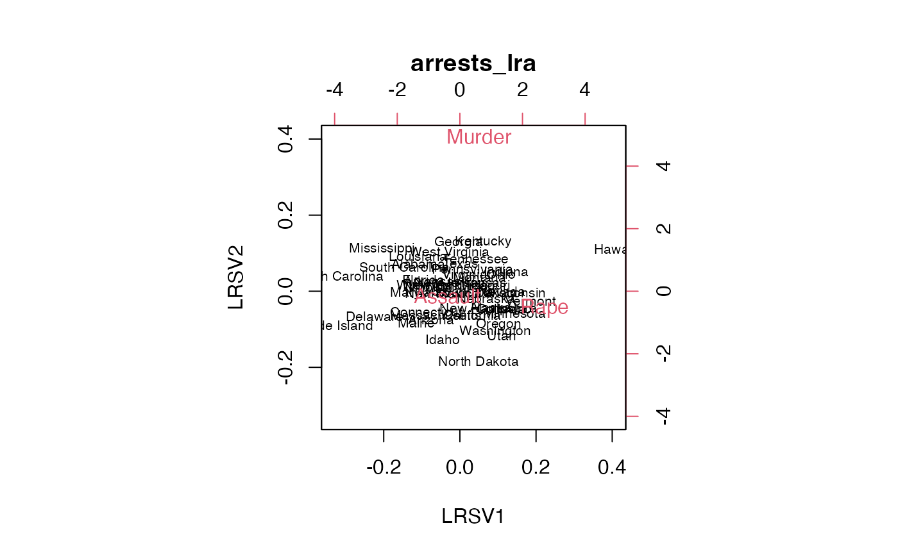

Log-ratio analysis
lra-ord.RdRepresent log-ratios between variables based on their values on a population of cases.
lra(x, compositional = FALSE, weighted = TRUE)
Arguments
| x | A numeric matrix or rectangular data set. |
|---|---|
| compositional | Logical; whether to normalize rows of |
| weighted | Logical; whether to weight rows and columns by their sums. |
Value
Given an \(n * p\) data matrix and setting \(r=min(n,p)\),
lra() returns a list of class "lra" containing three elements:
svThe \(r-1\) singular values
row.coordsThe \(n * (r-1)\) matrix of row standard coordinates.
column.coordsThe \(p * (r-1)\) matrix of column standard coordinates.
Details
Log-ratio analysis (LRA) is based on a double-centering of log-transformed data, usually weighted by row and column totals. The technique is suitable for positive-valued variables on a common scale (e.g. percentages). The distances between variables' coordinates (in the full-dimensional space) are their pairwise log-ratios. The distances between cases' coordinates are called their log-ratio distances, and the total variance is the weighted sum of their squares.
LRA is not implemented in standard R distributions but is a useful member of the ordination toolkit. This is a minimal implementation following Greenacre's (2010) exposition in Chapter 7.
References
Greenacre MJ (2010) Biplots in Practice. Fundacion BBVA, ISBN: 978-84-923846. https://www.fbbva.es/microsite/multivariate-statistics/biplots.html
Examples
# Log-ratio analysis of shared ingredients in Ruhlman's recipe ratios data(ratios) ratios %>% dplyr::select(chapter, recipe, flour, egg, butter) %>% dplyr::filter(flour > 0 & egg > 0 & butter > 0) %>% dplyr::group_by(flour, egg, butter) %>% dplyr::summarize(chapter = unique(chapter), recipes = stringr::str_c(recipe, collapse = " or ")) %>% dplyr::ungroup() %>% print() -> sub_ratios#>#> # A tibble: 4 x 5 #> flour egg butter chapter recipes #> <dbl> <dbl> <dbl> <chr> <chr> #> 1 1 1 1 batters pound or sponge #> 2 1 2 1 doughs choux #> 3 2 1 0.5 batters pancake #> 4 2 1 1 batters quick bread or muffinsub_ratios %>% dplyr::select(-chapter, -recipes) %>% lra(compositional = TRUE) %>% as_tbl_ord() %>% augment() %>% bind_cols_rows(dplyr::select(sub_ratios, chapter, recipes)) %>% print() -> lra_ratios#> # A tbl_ord of class 'lra': (4 x 2) x (3 x 2)' #> # 2 coordinates: LRSV1 and LRSV2 #> # #> # Rows: [ 4 x 2 | 2 ] #> LRSV1 LRSV2 | chapter recipes #> | <chr> <chr> #> 1 -0.562 1.04 | 1 batters pound or sponge #> 2 -1.33 -0.910 | 2 doughs choux #> 3 1.19 -1.08 | 3 batters pancake #> 4 0.700 0.954 | 4 batters quick bread or muffin #> # #> # Columns: [ 3 x 2 | 1 ] #> LRSV1 LRSV2 | .name #> | <chr> #> 1 1.19 -0.0397 | 1 flour #> 2 -0.876 -1.07 | 2 egg #> 3 -0.788 1.57 | 3 butterlra_ratios %>% confer_inertia("rows") %>% ggbiplot(sec.axes = "cols", scale.factor = .05) + geom_rows_text(aes(label = recipes, color = chapter)) + geom_cols_vector() + geom_cols_text(aes(label = .name), hjust = "outward", vjust = "outward") + expand_limits(x = c(-.2, .2)) + ggtitle("Log-ratio biplot of flour-butter-egg ratios in baking recipes") + expand_limits(x = c(-.35, .35))# state abbreviations state <- data.frame( .name = state.name, .abb = state.abb ) # Log-ratio analysis of 1973 violent crime arrests in the United States USArrests %>% subset(select = -UrbanPop) %>% lra() %>% print() -> arrests_lra#> $sv #> [1] 0.11758785 0.06383505 #> #> $row.coords #> LRSV1 LRSV2 #> Alabama -0.68001198 0.929601139 #> Alaska 0.92998988 -0.624577164 #> Arizona -0.32984955 -1.311581695 #> Arkansas -0.35134428 0.277323143 #> California 0.55165901 -1.004280086 #> Colorado 1.22910659 -0.638846890 #> Connecticut -0.43610804 -1.027017532 #> Delaware -1.54269183 -1.349322890 #> Florida -0.54682514 0.300298438 #> Georgia 0.15812112 1.916932033 #> Hawaii 3.51365819 2.150284964 #> Idaho -0.05250833 -2.109188891 #> Illinois -0.52429773 0.002652531 #> Indiana 1.22231804 0.881075829 #> Iowa 1.39095549 -0.632985189 #> Kansas 0.75715595 0.380674137 #> Kentucky 0.68864901 2.024832534 #> Louisiana -0.69015525 1.238509473 #> Maine -0.63716612 -1.499305459 #> Maryland -0.63629812 -0.286175559 #> Massachusetts -0.22762978 -1.124006923 #> Michigan 0.41414730 0.171745261 #> Minnesota 1.45222388 -0.789191960 #> Mississippi -1.47068651 1.436924829 #> Missouri 0.78566710 0.278289912 #> Montana 0.65946921 0.566956397 #> Nebraska 0.82281297 -0.284750183 #> Nevada 1.14994121 0.060475841 #> New Hampshire 0.88778358 -0.710870888 #> New Jersey 0.01717089 0.205735676 #> New Mexico -0.12336523 -0.223126918 #> New York -0.35365080 0.100656157 #> North Carolina -2.35659680 0.189728037 #> North Dakota 0.74912231 -2.900272794 #> Ohio 1.11076020 0.766013515 #> Oklahoma 0.30637650 -0.053491161 #> Oregon 1.13217636 -1.312593507 #> Pennsylvania 0.48983869 0.840580871 #> Rhode Island -2.42442178 -1.868251942 #> South Carolina -0.96800438 0.752042083 #> South Dakota 0.61067278 -0.091684230 #> Tennessee 0.55166149 1.334277800 #> Texas 0.22895595 1.088292623 #> Utah 1.20949943 -1.771844197 #> Vermont 1.78310111 -0.254863377 #> Virginia 0.33180838 0.612645656 #> Washington 1.07067103 -1.635935144 #> West Virginia -0.02043499 1.475198849 #> Wisconsin 1.43728882 0.033416687 #> Wyoming -0.50955934 0.033243165 #> #> $column.coords #> LRSV1 LRSV2 #> Murder 0.283086 4.9570302 #> Assault -0.370595 -0.1805698 #> Rape 2.876702 -0.3660163 #> #> attr(,"class") #> [1] "lra"arrests_lra %>% as_tbl_ord() %>% augment() %>% left_join_rows(state, by = ".name") %>% print() -> arrests_lra#> # A tbl_ord of class 'lra': (50 x 2) x (3 x 2)' #> # 2 coordinates: LRSV1 and LRSV2 #> # #> # Rows: [ 50 x 2 | 2 ] #> LRSV1 LRSV2 | .name .abb #> | <chr> <chr> #> 1 -0.680 0.930 | 1 Alabama AL #> 2 0.930 -0.625 | 2 Alaska AK #> 3 -0.330 -1.31 | 3 Arizona AZ #> 4 -0.351 0.277 | 4 Arkansas AR #> 5 0.552 -1.00 | 5 California CA #> # … with 45 more rows #> # #> # Columns: [ 3 x 2 | 1 ] #> LRSV1 LRSV2 | .name #> | <chr> #> 1 0.283 4.96 | 1 Murder #> 2 -0.371 -0.181 | 2 Assault #> 3 2.88 -0.366 | 3 Rape# Adapt Exhibit 7.1 in Greenacre (2010) arrests_lra %>% confer_inertia(1) %>% ggbiplot(sec.axes = "cols", scale.factor = 1/20) + theme_bw() + geom_rows_text( aes(label = .abb), size = 3, color = "darkgreen", alpha = .5 ) + geom_cols_polygon(fill = NA, linetype = "dashed", color = "brown4") + geom_cols_text( aes(label = .name), color = "brown4", fontface = "bold" ) + ggtitle( "Log-ratio analysis of violent crime arrest rates", "United States, 1973" ) + guides(color = FALSE, size = FALSE)# Compare PCA to LRA on the Freestone primary class composition data # following Baxter & Freestone (2006) # (do not exclude compositional outliers) data(glass) levantine_glass <- glass %>% dplyr::filter(Site != "Banias") %>% dplyr::mutate(Type = dplyr::case_when( Site == "Dor" ~ "Levantine I", Site == "Apollonia" ~ "Levantine I", Site == "Bet Eli'ezer" ~ "Levantine II" )) # scaled principal components analysis levantine_glass %>% dplyr::select(SiO2, Al2O3, CaO, FeO, MgO) %>% princomp(cor = TRUE) %>% as_tbl_ord() %>% bind_cols_rows(dplyr::select(levantine_glass, Site, Type)) %>% print() -> pca_glass#> # A tbl_ord of class 'princomp': (50 x 5) x (5 x 5)' #> # 5 coordinates: Comp.1, Comp.2, ..., Comp.5 #> # #> # Rows: [ 50 x 5 | 2 ] #> Comp.1 Comp.2 Comp.3 ... | Site Type #> | <chr> <chr> #> 1 1.43 -0.167 1.29 | 1 Bet Eli'ezer Levantine II #> 2 2.67 -0.250 -1.44 ... | 2 Bet Eli'ezer Levantine II #> 3 1.16 -0.473 0.387 | 3 Bet Eli'ezer Levantine II #> 4 0.199 0.370 1.14 | 4 Bet Eli'ezer Levantine II #> 5 0.305 0.703 0.930 | 5 Bet Eli'ezer Levantine II #> # … with 45 more rows #> # #> # Columns: [ 5 x 5 | 0 ] #> Comp.1 Comp.2 Comp.3 ... | #> | #> 1 0.510 0.272 0.405 | #> 2 0.489 -0.337 -0.381 ... | #> 3 -0.510 -0.181 -0.463 | #> 4 0.490 -0.176 -0.501 | #> 5 0.0234 0.865 -0.474 |# completely compositional log-ratio analysis levantine_glass %>% dplyr::select(SiO2, Al2O3, CaO, FeO, MgO) %>% lra(compositional = TRUE) %>% as_tbl_ord() %>% confer_inertia("rows") %>% bind_cols_rows(dplyr::select(levantine_glass, Site, Type)) %>% print() -> lra_glass#> # A tbl_ord of class 'lra': (50 x 4) x (5 x 4)' #> # 4 coordinates: LRSV1, LRSV2, ..., LRSV4 #> # #> # Rows: [ 50 x 4 | 2 ] #> LRSV1 LRSV2 LRSV3 ... | Site Type #> | <chr> <chr> #> 1 -0.0970 -0.0153 0.0106 | 1 Bet Eli'ezer Levantine II #> 2 -0.0667 0.0450 -0.00706 ... | 2 Bet Eli'ezer Levantine II #> 3 -0.0383 0.00675 0.00669 | 3 Bet Eli'ezer Levantine II #> 4 -0.0210 -0.0283 0.00463 | 4 Bet Eli'ezer Levantine II #> 5 -0.0254 -0.0295 0.00373 | 5 Bet Eli'ezer Levantine II #> # … with 45 more rows #> # #> # Columns: [ 5 x 4 | 0 ] #> LRSV1 LRSV2 LRSV3 ... | #> | #> 1 -0.311 -0.244 0.00644 | #> 2 -0.328 2.99 2.46 ... | #> 3 3.03 0.396 -0.0286 | #> 4 -2.52 10.5 -4.53 | #> 5 0.306 0.227 -9.41 |ggbiplot(lra_glass, sec.axes = "cols", scale.factor = .05) + geom_rows_point(aes(shape = Site, color = Type)) + geom_cols_vector() + geom_cols_text(aes(label = .name), hjust = "outward", vjust = "outward") + expand_limits(x = c(-.2, .2))# completely compositional log-ratio analysis with FeO and MgO excluded levantine_glass %>% dplyr::select(SiO2, Al2O3, CaO) %>% lra(compositional = TRUE) %>% as_tbl_ord() %>% confer_inertia("rows") %>% bind_cols_rows(dplyr::select(levantine_glass, Site, Type)) %>% print() -> lra_glass#> # A tbl_ord of class 'lra': (50 x 2) x (3 x 2)' #> # 2 coordinates: LRSV1 and LRSV2 #> # #> # Rows: [ 50 x 2 | 2 ] #> LRSV1 LRSV2 | Site Type #> | <chr> <chr> #> 1 -0.0990 -0.00161 | 1 Bet Eli'ezer Levantine II #> 2 -0.0591 0.0265 | 2 Bet Eli'ezer Levantine II #> 3 -0.0366 0.00466 | 3 Bet Eli'ezer Levantine II #> 4 -0.0251 -0.0159 | 4 Bet Eli'ezer Levantine II #> 5 -0.0306 -0.0113 | 5 Bet Eli'ezer Levantine II #> # … with 45 more rows #> # #> # Columns: [ 3 x 2 | 0 ] #> LRSV1 LRSV2 | #> | #> 1 -0.329 -0.219 | #> 2 -0.299 5.02 | #> 3 3.06 -0.0173 |ggbiplot(lra_glass, sec.axes = "cols", scale.factor = .05) + geom_rows_point(aes(shape = Site, color = Type)) + geom_cols_vector() + geom_cols_text(aes(label = .name), hjust = "outward", vjust = "outward") + expand_limits(x = c(NA, .2))